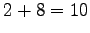

Next: SYSCALL 2 - close() Up: The SYSCALL instruction Previous: SYSCALL 0 - exit() Contents
This integer must be built summing the flags that you want to use, choosing them from the following list:
It is mandatory to specify one of the first three modes. The fourth and the fifth modes are exclusive, you can not specify O_APPEND if you specify O_TRUNC (and vice versa).
You can specify a combination of modes by simply adding the integer values of those flags. For instance, if you want to open a file in write only mode and append the written text to the end of file, you should specify the mode .
The return value of the system call is the new file descriptor associated with the file, that can be further used with the other system calls. If there is an error, the return value will be -1.
andrea 2007-09-29